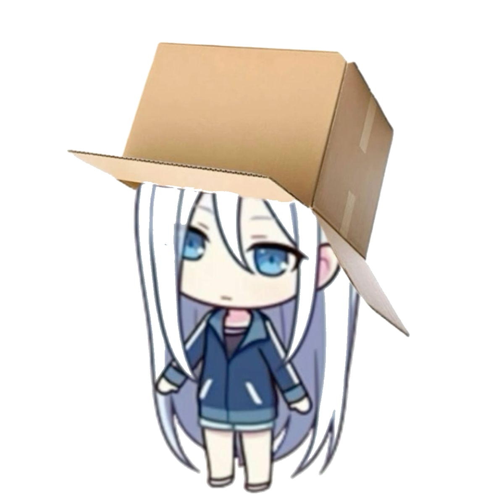
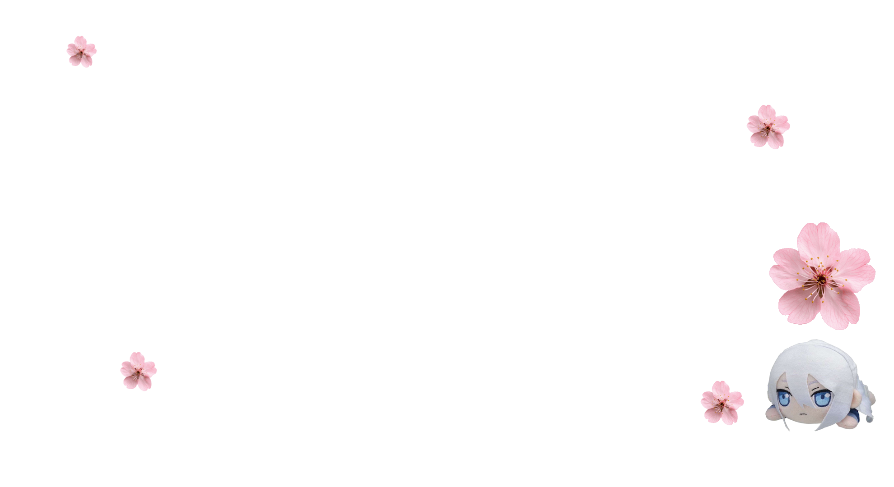
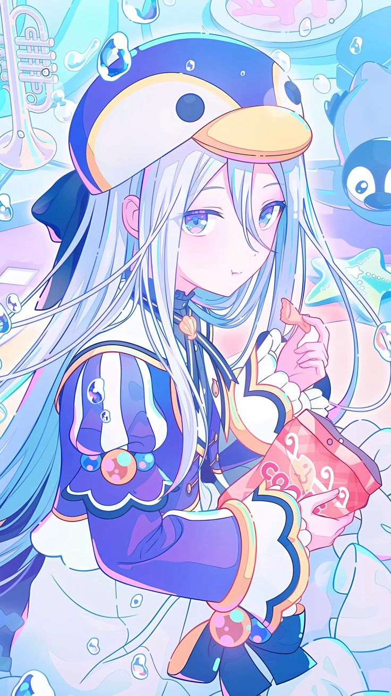

This Website (lol)
A website. That's it.


A personal space for my projects, experiments, and everything that sparks my curiosity. Explore what I'm building and discovering.


My name is Samudera, you can call me Sam.
I'm REALLY interested in technology, especially computers and electronics. I like experimenting with different projects and figuring out how things work.
Other than that I am also interested in making arduino projects.
Nice to meet you! :3
A collection of my recent work showcasing creativity and technical expertise.
A website. That's it.
I'll be adding a project documentation soon! :3
Redirecting...